Psicologia das Cores
Emoções que as cores passam
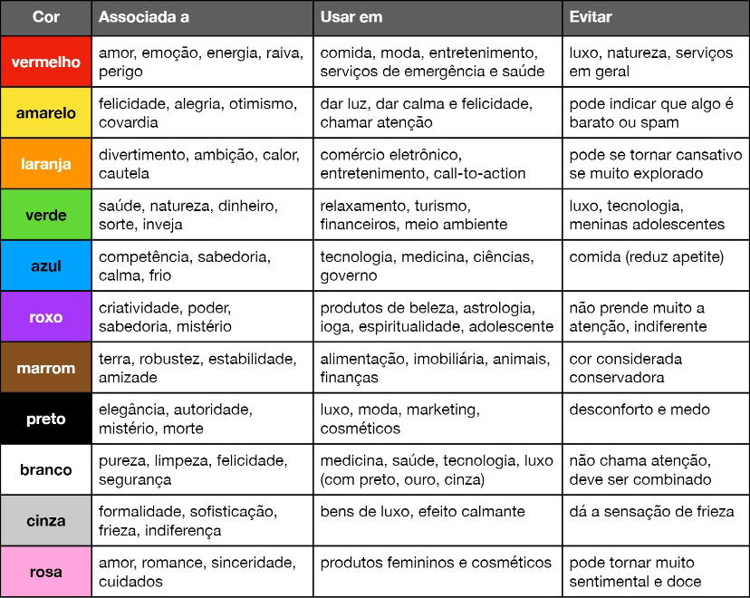Círculo Cromático
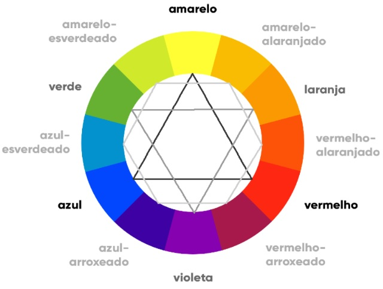Tipos de cores
Cores Primárias
As cores primárias são: o amarelo, azul e o vermelho. Formam um triângulo equilátero perfeito
Cores Secundárias
As cores secundárias são: o verde, laranja e violeta. Formam um triângulo equilátero invertido perfeito
Cores terciárias
O nome das cores terciárias formam um padrão de sempre começar com o nome da primária mais próxima e terminar com da secundária mais próxima. Formam um hexágono perfeito
Temperatura das cores
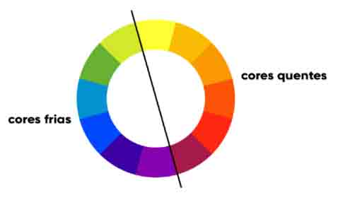Cores quentes passam uma sensação de calor e proximidade, enquanto as frias passam mais calma, tranquilidade e frescor
Paleta de Cores
Cores Complementares
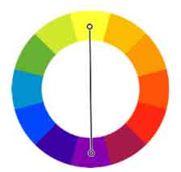Cores que estão opostas no círculo cromático. Quando juntas, produzem um efeito grande de contraste
Cores Análogas
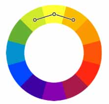Cores vizinhas no círculo cromática. Quando juntas, têm-se pouco contraste
Cores Análogas e uma Complementar
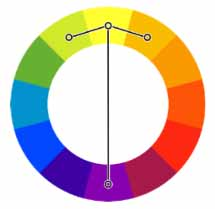Com essa técnica, quebramos o ritmo semelhante das cores análogas, criando um grande contraste com uma cor complementar
Cores análogas Relaciondas
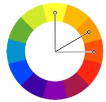Duas cores vizinhas, pulando uma terceira cor e selecionando a quarta
Cores Intercaladas
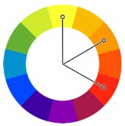Escolhendo uma cor, pulando a segunda, selecionando a terceira, pulando a quarta e, por fim, selecionando a quinta, obtemos uma paleta de cor mais dura
Cores triárdicas
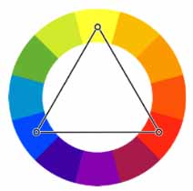Três cores que formam um triângulo equilátero no círculo cromático
Cores em quadrado
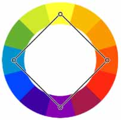Duas cores, com seus respectivos opostos no círculo cromático, formando um quadrado.
Cores Tetrádicas
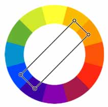Duas cores com suas cores ligeiramente opostas no cículo cromático, formando um retângulo
Monocromia
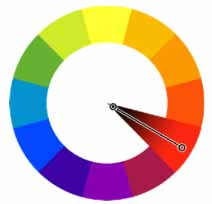Uma única cor, que muda apenas sua saturação e luminosidade